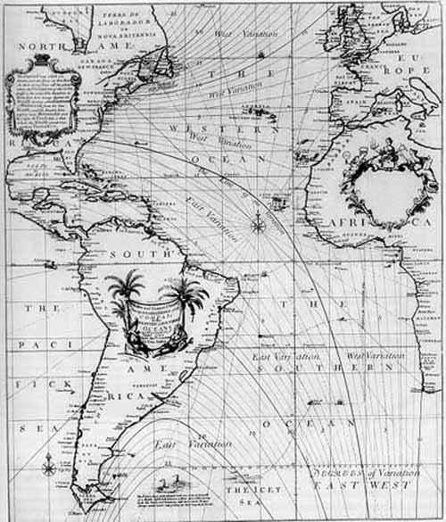

Representation Blog Post
The author discusses various theories of representation through 5 points or headings of
discussion.
She
starts out with the quote ‘We live immersed in representation: it is how we understand our
environment
and
each other. It is also as we both are, and hos we understand ourselves; representation is
implicated
in
the
process of becoming me’, and goes on to explain this by firstly looking at representation and
reality.
reality is made up of codes and signs communicated through media and cultural texts to shape our
perceptions and how the reader attaches meaning to what is communicated. To do this, she refers
to
Semiotics
based on the ideas of Ferdinand De Saussure and Charles Saunders Pierce. This is essentially the
study
of
signs and how people read them. Signs being any gesture, sound or image (the signifier) that
communicates
something and what that sign is meant to represent to the audience (the signified). What the
sign
represents
can have different meanings depending on the cultures or social groups and the context.
Therefore
‘representation is the way meaning is given to the things depicted through images or words…but
does
reality
have any essential fixed or true meaning.’ (Stuart Hall 1997, Definition of Representation). So
in
decoding
represented reality, we should remember context, bias, filter and frame, our own and that of
others,
that
make up and shape codes that we use to give meaning.
The second point of discussion is representation and myth. The author gives the example of the
Apple
logo
where the reader can understand it in one of 2 ways; denotation or connotation. An apple is just
an
apple
(denotation) but the Apple logo suggests expensive, desirable, slick etc (connotation). We
recognise
the
significance because it is so widespread in the media and advertising that we hardly even
realise
it.
This,
according to Barthes (1957), is the making of the myth. Another example is stereotyping. The
author
gives
the exmple of how the East or Orient is portrayed over and over in the media and in films as
being
‘exotic’
or ‘backward’ to a Western culture audience who have no first-hand experience of Eastern culture
and
we
come
to accept the myth through the layers of signs and codes making up our maps of meaning of the
world
and
our
understanding of it. So representation is open to distortion, bias and misrepresentation.
third point of discussion is representation and visual communication. Images without text or
context
can
be interpreted in a number of ways and are especially susceptable to the emotional and cultural
association
that the image carries. This can be positive for some and negative for others and is seen
particularly
in
advertising where established associations are used to put a point across to a target audience.
The fourth point of discussion is representation and persuasion. For example a newspaper article
where
images are seen in relation to other images and with text to give a particular version of
reality.
Our
perception of the image is also affected by our own bias and experinece of the world, it is not
an
objective
reality. These days visual representation is widespread and incorporates images, symbols, text
and
graphs,
which can all be presented in a way to get a desired effect on society. A photo or image can be
manipulated
by digital technology, framing, point of view and lighting depending on the story the media or
advertiser
wants to construct to persuade us over to their view. The question arises what is the real story
when
the
data can be speculative but is presented as legitimate through subtle associations of cultural
codes.
The fifth point of discussion is representation and identity politics. Representation of social
groups
according to race, gender, creed, political affiliation,class, age and sexuality can be
derrogatory
and
negative, for example black people are over represented as the baddies in movies. There is
embedded
human
bias particularly in the media, which makes them very powerful in terms of public persuasion in
all
areas of
representation.
from: Kidd, J. (2015) Representation. Routledge.
Historic Data Visualisation Blog Post

This historic data visualization was created by Edmond halley. He developed and created the
contour
line
map that is widely used to this day as a way of explaining and describing the different weather
that
places around the world experience. These contour lines are joined by places of equal height on
the
map,
these lines are able to show things such as the gradient of an area on a flat 2D map, if they
are
close
together they represent a steep gradient and if they are far away from each other they represent
a
gentle gradient. Edmonds development of this way of representing height on a flat 2D map was
unbelievably important in paving the way to understand the weather and world around us. By
making
the
graph simple and easy to read by making the concept of the graph simple to understand – places
with
equal height are joined. Without Edmonds developments in this way of displaying large amounts of
real-world tridimensional data on a bidimensional map we would not be able to theorize many of
the
explanations for weather formations and more importantly it allows us to predict things like the
height
of an area which leads us to explain and predict weather conditions of a certain area with
relative
ease. It is important for a person looking at the graph of contours to know what the contours
actually
represent, otherwise the graph would be near useless to people that don’t know what the lines
mean.
This
highlights the importance of simple, clear and concise information that is easily understandable
by
everyone. To someone who has never seen a map before the representation is useless but to
someone
who
knows how to interpret that information it becomes a powerful tool that can be used.
from:
(https://medium.com/@Infogram/key-figures-in-the-history-of-data-visualization-30486681844c)
Data-driven Storytelling Blog Post
Visualization researchers show that explanation and exploration can be complimentary in data
driven
storytelling and that this opens up new avenues in terms of ‘design, engagement, discovery and
narrative
devices’. Previously, ‘exploration’ allowed reader to assemble their own conclusions from
analysis
of
the data presented and, what was considered opposite to this, that ‘explanation’ of visual data
is
communicacted from the viewpoint of the author and therefore has the author’s inherent bias.
this gives a number of characteristics of exploration. It allows the viewer to access extra data on
what is being presented so reader can come their own conclusions according to their own
knowledge
and
interests. Exploration data-driven stories give the reader a number of different representations
by
pre-selecting data attributes and static representations, where viewer asks himself questions
regarding
the data presented and allows for his own interpretation. Another characteristic of the
exploration
driven data story is the interactive capabilities where different aspects of the data can be
investigated.
of explanation include the direct or indirect presence of the author directing the
interpretation of the story. Another characteristic is that selected visuals and text are used
to
emphasize what the author wants you to see from the given data set. Explanatory elements include
headlines, visual clips, long form text and linear sequence to support the author’s viewpoint,
thereby
guiding your interpretation. Another characteristic is that these explanations can be obvious or
subtle,
either way the author purposely chooses what to show and how to show specific information to
communicate
his viewpoint.
Data-driven visual stories more often have both explanatory elements and exploratory elements by
offering flexibility to the reader alongside the author’s interpretation. This is seen is the
flexibility of the ‘view’ of the story where many different separate viewpoints of the same data
set
are
offered, in the flexibility of the ‘focus’ where complex static visualization allows
viewer/reader
to
investigate subsets that attract their attention and in the flexibility of the sequence or order
of
the
interactive visualisations through scrolling buttons and panning/zooming ability so
viewer/reader
can
jump across the story in any order. So explanation and exploration can be quite complimentatry
if
used
in balance in a data-driven story and don’t have to be either or. This opens new opportunities
for
new
and engaging types of storytelling.
from: Riche, N. H. et al. (eds) (2018) Data-Driven storytelling. Boca Raton, Florida: CRC
Press/Taylor &
Francis Group (A K Peters Visualisation Series) (Exploration and Explanation in DataDriven
Storytelling)
.
Critical Reflection on my data visualisation
In this blog post I will be reflecting on my own data visualizations and why they have been represented
in
the way that they have been.
On my website I have 4 data visualizations of all different shapes and sizes, from dots to donut charts.
Information is a powerful tool that can be used in many different ways, people can use it for good and
for
bad. But the way information is conveyed and displayed to people is integral to the way people
understand
it. I have learnt that the way that information is displayed can change the way people perceive what is
being showed to them. An example of this is in my extra data visualization made using chart.js
libraries. In
the chart different bars are displayed showing the statistics of the covid-19 global pandemic. The bar
displaying ‘confirmed’ can be misread very easily. The confirmed bar might scare people into thinking
that
there are way more cases that there actually are, the bar actually represents the total number of cases,
this includes all of the other bars being added together to get this total. This, while not intentional,
is
a good example of how information can be manipulated into misleading people to believe things that
aren’t
really true. I have chosen to keep the graph this way as an example of bad data visualization
techniques.
In my other visualizations I have used various other ways of representing data, my first data
representation
is quite simple as it was a practice graph to learn about d3. But in most cases the more simplistic a
graph
is, the easier it is to understand by the viewer. The second and third data visualizations are more
complex.
The second is an interactable bar chart visualization showing that the more engaging and interactable a
graph is the more attention people pay to it because they can change certain aspects about it, in this
graph
I have made a function that will hide the bar(s) that you select making It easier to compare the data
being
represented. The third data visualization is more colorful and fun, it takes the covid-19 data and
represents it in a different way, this way being as a donut chart. These charts are mainly used for
displaying information that is part of a whole or in simple terms the percentage out of 100. In the case
of
this donut chart the total number of cases is the 100% and the other statistics add together to get this
number. This shows visually how each of the statistics (active, critical, death and recovered) make up
the
whole total number of confirmed cases.
All in all, information visualization is a powerful tool that allows people to quickly analyses facts
about
a situation, for example the covid-19 statistics. These representations can be used unethically or
ethically
by the people that create them, this highlights the importance of correct data visualization so that it
is
not misleading to people who see them.
Ethics in data Visualisation Blog Post
from: Janssens, L. (ed) (2016) The art of the ethics in the information society. Amsterdam University
Press.
Information is Beautiful - Ethical Implications Blog Post
from: (https://informationisbeautiful.net)